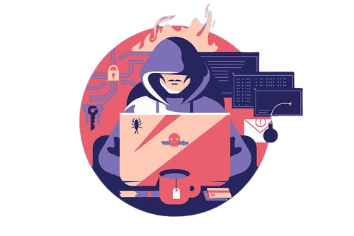
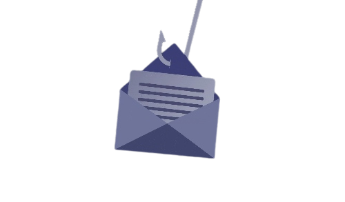

Top 5 Simple Ways To Prevent Phishing Attacks
In the age of digital information, it's important to be aware of the dangers of phishing attacks. Phishing is a type of online fraud that tries to trick you into giving out personal information, such as your password or credit card number. While it can be difficult to spot a phishing email or website, there are some simple ways to protect yourself. Here are some simple tips to help you prevent phishing attacks:

1. Don't click before verifying link
Many malicious phishing attacks succeed because the person who gets an email acts on the allure towards a link that will grant access to a third-party data harvesting service, or a link to payloads of violence or malware on his device or personal computer. First, assess the link's reach before clicking on it. Also, compare the URL in the browser to the info on the page. As an example, one form of phishing attack urged users to check the site's card numbers to see if there had been any fraudulent purchases. Users who clicked the No button please see a fake, similar-looking website, where they were requested to enter their confidential information. Checking the URL in the browser is one way to see that the website is fake in the first place.
2. Keep your Internet browser updated
To protect against phishing attacks, be sure to keep your internet browser completely updated. For example, a browser security vulnerability in Google Chrome last year allowed a fraudster to install malware, create new users, and redirect users to a deceptive website. Google released a security update to address this particular vulnerability. Whenever you make sure the web server is configured to enforce only the newest browser versions, the enterprise internet gateway will prevent access to outdated or obsolete browsers.
3. Use two factor authentication to add another layer of security
Two-factor authentication (hardware token, SMS via mobile device) can help you prevent unauthorized access if you have your username stolen or compromised. This adds another layer of security, and reduces the likelihood of getting hacked. This can also assist the security officers as attacks receive fewer passwords.
4. Focus on employee education
Technology is important, but user awareness is just as important. Users must be shown real-life examples of how phishing emails operate, and why they shouldn't click on unfamiliar links. Companies must also post signage in prominent areas so users are always aware that clicking a link could mean the loss of their company. Companies can also conduct tests and secret competitions for employees to improve their safety consciousness and browse emails. This should be done with a goal to strengthen company cultures by improving cybersecurity understanding among staff in personal affairs and at work.

5. Use the best anti-phishing software to prevent attacks
Anti-phishing software can be employed to exercise caution at websites from which you may be redirected and to keep an eye on any undesirable links that may exist. Anti-phishing software can also be utilized to help identify malignant links and guarantee that malware is not downloaded when an employee clicks on a link and another malware tries to download itself in the office (either on a cell phone or a PC). Anti-phishing software is often checked to ensure protection from zero-day vulnerabilities. Firewalls must also be used since they are customary first lines of defense for any organization. Though these digital tools may disable people from visiting phishing sites, companies should also consider using risk intelligence providers that can identify if a site is phishing, then take it down.
In conclusion, it's important to be aware of common phishing attacks. Even though you may have been cautious about opening emails from companies you don't do business with, opening an email attachment or clicking on a link from an unknown source can cause you harm.